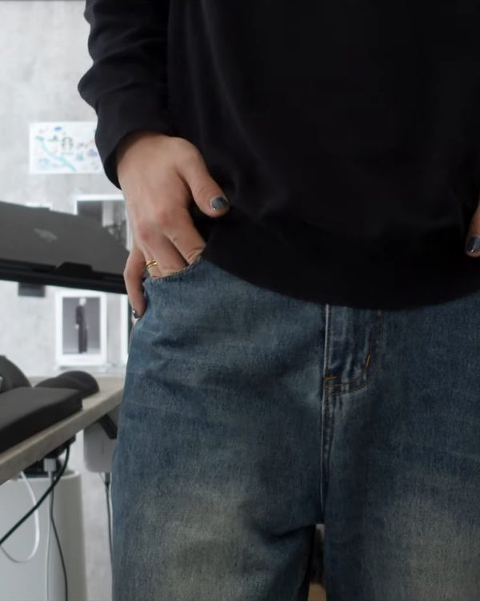
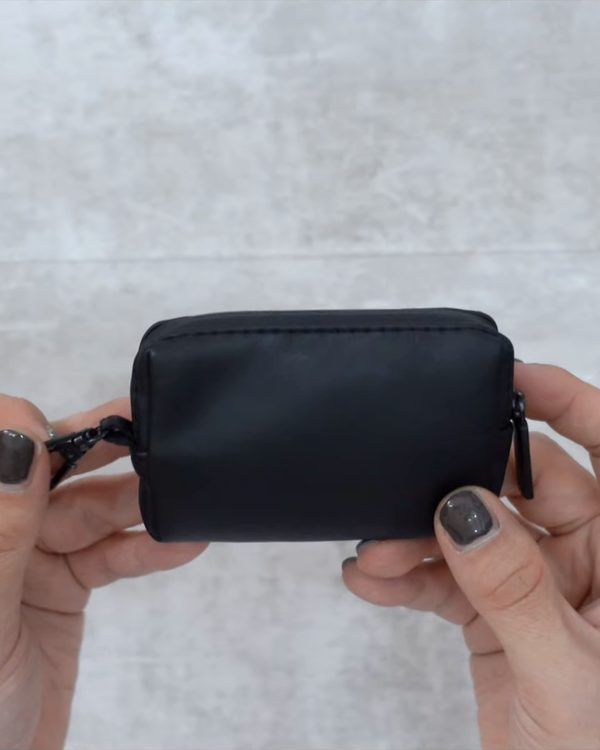

No.—
号数は、これまでの動画の本数
— 実測
ミニマリストになりたくも
永遠になれないIT系テレワーカー。
ガジェットと洋服が好き、
マヨネーズが世界で一番きらい。
— から —
／ 登録者 —
／ 総再生 —
／ Lab 登録者 —
YouTube Data API 実測 —。登録者数は概数
Feature特集
かばん5本
- 01tomtoc アーバンEX T77
- 02tomtoc Explorer T21
- 03StandardProducts 2wayバッグ｜iPad mini編
- 04読書かばん その２
- 05読書かばん


Look 03StandardProducts 2wayバッグ｜iPad mini編2026.05.24かばんを見る →


持ちもの—点
Carry4つのまとまり